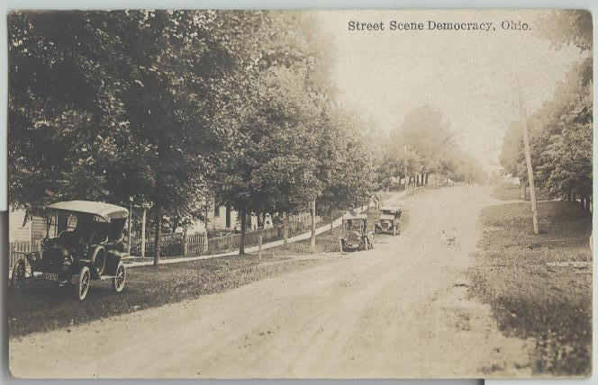
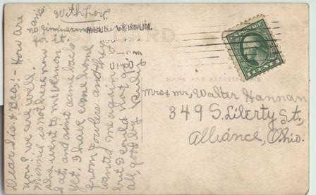

Democracy

Democracy was a post office town in Pike Township, Knox County. It was established on April 21, 1834, with William Gordon as postmaster, and existed until the post office closed down on March 21, 1924, and mail service was transferred to Mt. Vernon. Democracy was eaten up by the town of Amity.

What makes Democracy more interesting is the postcard which was recently scanned and sent to me by a contributor. They show Democracy at some point during its 90-year lifespan. Above you can read the handwritten message on the back. From what I can tell, this is what it says:
Dear Sis & Bro - How are you? We are well. Minnie is not here now. She went to Mt. Vernon Sat. and ain't came back yet. I have came home from Fowlers and they wanted me again but I could not go for it [indistinct] all. Good day, Ruby.
All of which makes you wonder if the public schools are really that much worse than they were a hundred years ago.
Back